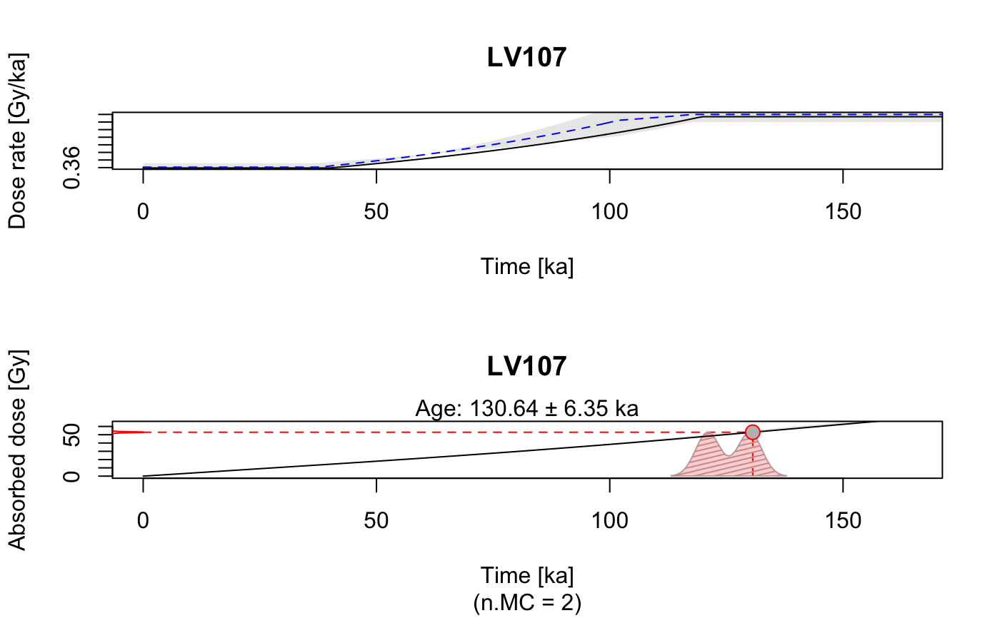

model_DoseRate.RdThis function models the dose rate evolution in carbonate enrich environments. For the calculation internal functions are called.
model_DoseRate(data, length_step = 1L, max_time = 500L, n.MC = 100, method_control = list(), txtProgressBar = TRUE, verbose = TRUE, plot = TRUE, ...)
| data | data.frame (required): input data following the structure given
in the example data set |
|---|---|
| length_step | numeric (with default): step length used for the calculation |
| max_time | numeric (with default): maximum temporal search range |
| n.MC | numeric (with default): number of Monte Carlo runs used for the error calculation |
| method_control | (optional): additional arguments that can be provided to the control the the modelling. See details for further information. |
| txtProgressBar | logical (with default): enables/disables the |
| verbose | logical (with default): enables/disables verbose mode |
| plot | logical (with default): enables/disables plot output |
| ... | further arguments passed to the underyling plot functions, see also details for further information. Supported standard arguments are |
The function returns numerical and graphical output
-----------------------------------
[ NUMERICAL OUTPUT ]
-----------------------------------
A data.frame which is the combination of the input and values calculated by this function.
-----------------------------------
[ GRAPHICAL OUTPUT ]
-----------------------------------
Upper plot: Dose rate evolution over time backwards. The solid black line is the calculation
output, the grey shaded area indicates the 2-sigma error margins. The dashed blue line is an indicator
of the quality of the error estimations based on Monte Carlo (MC) runs.The closer it follows the
black line, the more reliable are the given error margins.
Lower plot: Totally absorbed dose over time. The plot is an representation of the 'new' age based on the carbonat modelling.
This function is the starting point for the dose rate modelling for carbonat enrich
environments. It provides basically the same functionality as the original version of 'Carb', i.e.
you should be also aware of the limitations of this modelling approach. In particular: The model
assumes a linear carbonate mass increase due to post-depositional processes. Please read the
references cited blow.
Uncertainty estimation
For estimating the uncertainties, Monte-Carloe (MC) simulation runs are used. For very small values (close to 0) this can, however, lead to edge effects (similar in 'Carb') since values below 0 are set to 0.
0.1.0
Mauz, B., Hoffmann, D., 2014. What to do when carbonate replaced water: Carb, the model for estimating the dose rate of carbonate-rich samples. Ancient TL 32, 24–32.
Nathan, R.P., Mauz, B., 2008. On the dose-rate estimate of carbonate-rich sediments for trapped charge dating.
Radiation Measurements 43, 14–25. https://dx.doi.org/10.1016/j.radmeas.2007.12.012
Further reading
Nathan, R.P., 2010. Numerical modelling of environmental dose rate and its application to trapped-charge dating. DPhil thesis, St Hugh’s College, Oxford.
##load example data data("Example_Data", envir = environment()) ##run the function for one sample from ##the dataset model_DoseRate( data = Example_Data[14,], n.MC = 2, txtProgressBar = FALSE )#> #> [model_DoseRate()] #> #> Sample ID: LV107 #> Equivalent dose: 53 ± 2 Gy #> Diameter: 215 µm #> MC runs error estim.: 2 #> ------------------------------------------------ #> Age (conv.): 149.73 ± 0.417 ka #> Age (new): 130.642 ± 6.354 ka #> #> Dose rate (conv.): 0.354 ± 0.012 Gy/ka #> Dose rate (onset): 0.5 ± 0.02 Gy/ka #> Dose rate (final): 0.361 ± 0.011 Gy/ka #> ------------------------------------------------#> SAMP_NAME K K_X T T_X U U_X U238 U238_X U234_U238 U234_U238_X #> 14 LV107 0.073 0.004 0.67 0.02 0.79 0.07 0 0 0 0 #> WCI WCI_X WCF WCF_X CC CC_X DIAM DIAM_X COSMIC COSMIC_X INTERNAL INTERNAL_X #> 14 10 2 5 5 60 2 215 35 0.0876 0.0044 0 0 #> ONSET ONSET_X FINISH FINISH_X DE DE_X AGE_CONV AGE_CONV_X AGE AGE_X #> 14 120 10 40 10 53 2 149.73 0.417 130.642 6.354 #> DR_CONV DR_CONV_X DR_ONSET DR_ONSET_X DR_FINAL DR_FINAL_X n.MC #> 14 0.354 0.012 0.5 0.02 0.361 0.011 2